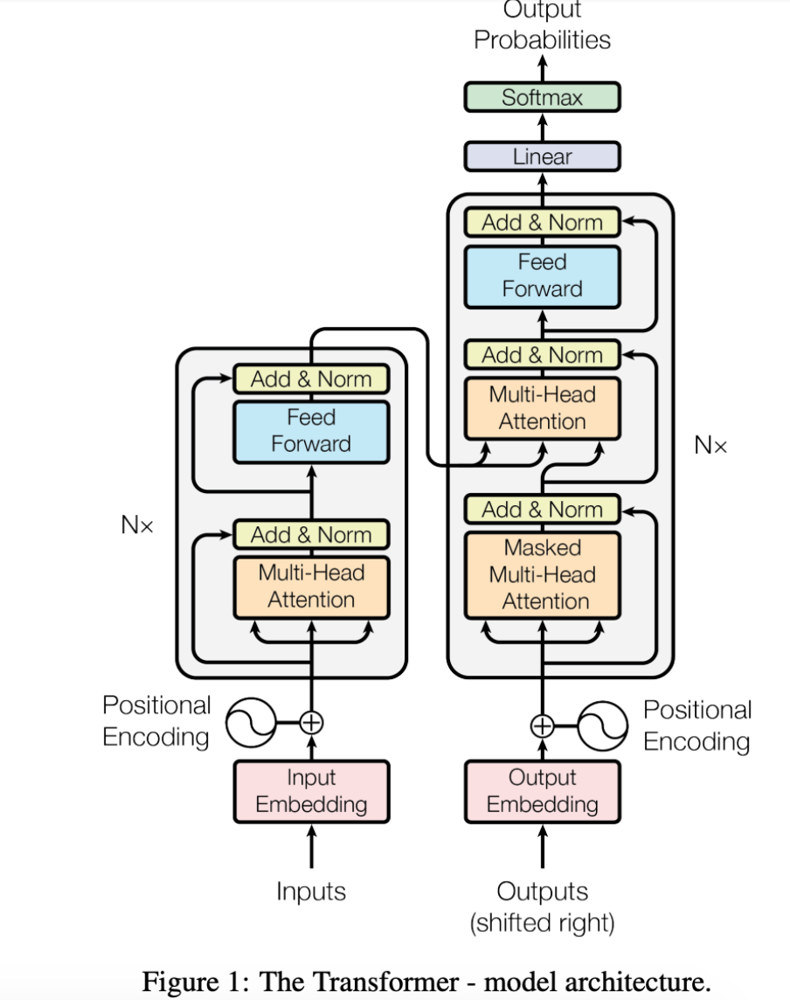
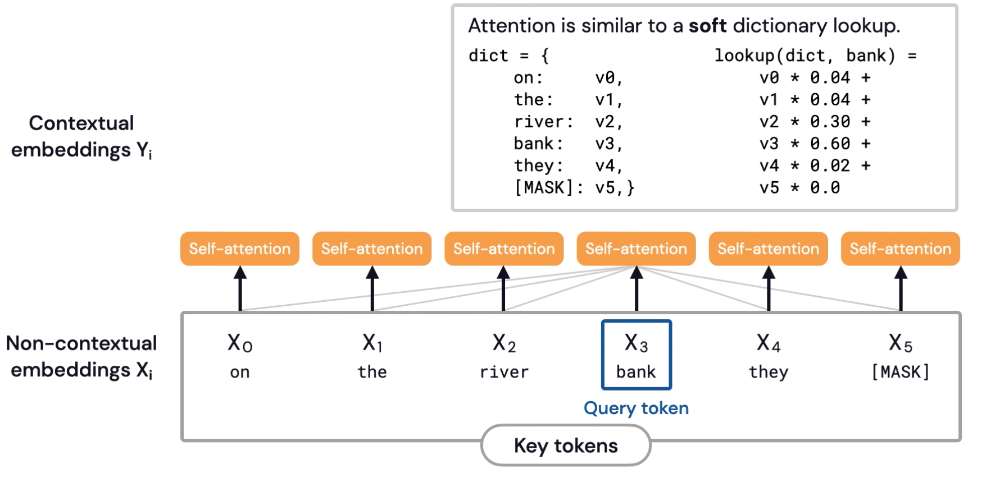
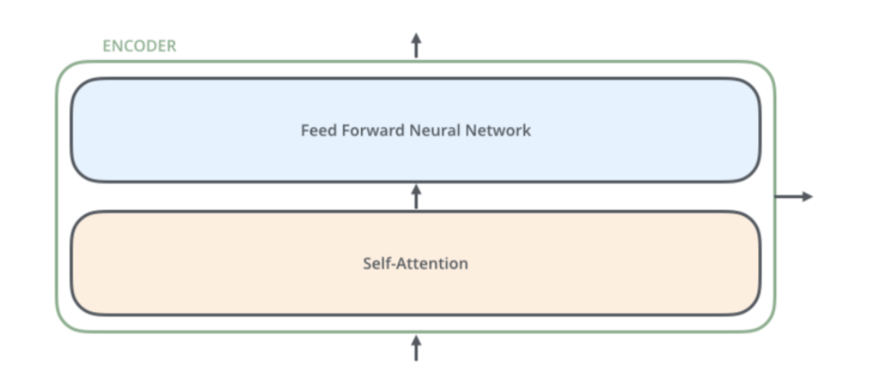

Transformers
Overview
Transformers compute
vector-space representationsof natural language that are suitable for use in deep learning models.Based solely on attention mechanisms to compute representations of its input and output without using sequence aligned RNNs or convolutions.
The benefit of the transformer architecture is that it helps the model to retain infinitely long sequences that were not possible from the traditional RNNs, LSTMs, and GRU
Still lacks contextual understanding.
Why Transformers?
paper: Attention Is All You Need - 2017
Attention allows the model to focus on the relevant parts of the input sequence as needed.
Self-attention is the method the
Transformeruses to bake the “understanding” of other relevant words into the one we’re currently processing.Models like
ELMowhich uses LSTMs to alleviate the consequences of not having an attention mechanism to create an efficient way offocusingon the important word in each sentence.This is the problem the Transformer network addressed by using the attention mechanism.
Structure
Attention is all you needpaper used attention to improve the performance of machine translation. They created a model with two main parts:Encoder: This part of the “Attention is all you need” model processes the input text, looks for important parts, and creates an embedding for each word based on relevance to other words in the sentence. (Stack of 6 encoders)
Decoder: This takes the output of the encoder, which is an embedding, and then turns that embedding back into a text output, i.e. the translated version of the input text (Stack of 6 Decoders).

Notes:
Neither the encoder nor the decoder used any recurrence or looping, like traditional RNNs.
Instead, they used layers of
attentionthrough which the information passes linearly. It didn’t loop over the input multiple times – instead, the Transformer passes the input through multiple attention layers.You can think of each attention layer as
learningmore about the input, i.e. looking at different parts of the sentence and trying to discover more semantic or syntactic information.This is important in the context of the vanishing gradient problem.
Attention

Attention Mechanism
Query: is the input word vector for the token.
Keys: keys are the input word vectors for all the other tokens, and for the query token as well.
Values: The values are the values stored in they dictionary for each token (e.g. key).
Calculate Self-Attention
For each word, create a
Queryvector, aKeyvector, and aValuevector and are created by multiplying the embedding by three matrices that we trained during the training process.Calculate a score to determine how much focus to place on other parts of the input sentence as we encode a word at a certain position.
The score is calculated by taking the
dot productof the query vector with the key vector; the result is a scaler;This value provides us an attention score and measures how relevant the key is to a query. The output is a weighted sum.
So if we’re processing the self-attention for the word in position #1, the first score would be the dot product of
q1andk1.The second score would be the dot product of
q1andk2and so on…
Divide scores by 8; having more stable gradients (paper)
Apply
softmaxto normalize the scores so they’re all positive and add up to 1.Determines how much each word will be expressed at this position (e.g. first word, etc.)
Multiply each value vector by the
softmaxscore; this helps drown-out irrelevant words when multiplying by small values.Sum up the weighted value vectors, which produces the output of the self-attention layer
Resulting vector is one we can send along to the feed-forward neural network.
Encoders
The encoders are all identical in structure (yet they do not share weights). Each one is broken down into two sublayers: self-attention and feed-forward
The encoder’s inputs first flow through a self-attention layer which helps the encoder look at other words in the input sentence as it encodes a specific word.
The outputs of the self-attention layer are fed to a feed-forward neural network.

Decoders
The decoder has both those layers, but between them is an attention layer that helps the decoder focus on relevant parts of the input sentence
The output of the top encoder is then transformed into a set of attention vectors K and V.
These are to be used by each decoder in its “encoder-decoder attention” layer which helps the decoder focus on appropriate places in the input sequence
The decoder stack outputs a vector of floats which is passed to a final fully connected layer that projects the vector produced by the stack of decoders into a logits vector
Softmax layer then turns those scores into probabilities
Output: the cell with the highest probability is chosen, and the word associated with it is produced as the output for this time step.
Reference: http://jalammar.github.io/illustrated-transformer/

BERT
The BERT family of models uses the
Transformerencoder architecture to process each token of input text in the full context of all tokens before and after, hence the name:Bidirectional Encoder Representations from Transformers.BERT models are usually pre-trained on a large corpus of text, then fine-tuned for specific tasks.
BERT Tasks
Question answering
NER
Semantic similarity
Document classification
Predicting next word
Why Bert?
There were still issues with the limits of training large amounts of data using approaches like ELMo and Word2Vec.
This was a serious obstacle to the potential of these models to improve their ability to perform well on a range of NLP tasks. This is where the concept of pre-training set the scene for the arrival of models like BERT to accelerate the evolution
BERT Overview
BERT is pre-trained on a large corpus of unlabelled text including the entire Wikipedia and BookCorpus with
30MMtokens.Used for transfer learning
BERT makes use of
Masked Language Modelsto randomly mask words in the sentence and then it tries to predict them.Masking is where the model looks in both directions and it uses the full context of the sentence in order to predict the masked word. The bidirectional aspect creates a representation of each word that is based on the other words in the sentence - context-based.
Example:
“I accessed the bank account,” a unidirectional contextual model would represent “bank” based on “I accessed the” but not “account.”
BERT relies on Transformers (the attention mechanism that learns contextual relationships between words in a text).
Inner-workings of BERT
The input to the encoder for BERT is a sequence of tokens, which are first converted into vectors and then processed in the neural network.
Token embeddings: A
[CLS]token is added to the input word tokens at the beginning of the first sentence and a[SEP]token is inserted at the end of each sentence.Segment embeddings: A marker indicating Sentence A or Sentence B is added to each token. This allows the encoder to distinguish between sentences.
Positional embeddings: A positional embedding is added to each token to indicate its position in the sentence.
BERT-Base: 12-layer, 768-hidden-nodes, 12-attention-heads, 110M parameters
BERT-Large: 24-layer, 1024-hidden-nodes, 16-attention-heads, 340M parameters
BERT Example with Tensorflow
Load a pre-trained BERT model from
TensorFlow Hub.-
Text inputs have been normalized the “uncased” way, meaning that the text has been lower-cased before tokenization into word pieces, and any accent markers have been stripped.
-
Small BERTs have the same general architecture but fewer and/or smaller Transformer blocks, which lets you explore tradeoffs between speed, size and quality.
Preprocessing the Model
Text inputs need to be transformed to numeric token ids and arranged in several Tensors before being input to
BERT.bert_preprocess_model = hub.KerasLayer(tfhub_handle_preprocess)
BertTokenizer Tokenizer classes which store the vocabulary for each model and provide methods for encoding/decoding strings in list of token embeddings indices
input_word_idsinput_maskinput_type_ids
Simple Example using Keras
text_input = tf.keras.layers.Input(shape=(), dtype=tf.string)
preprocessor = hub.KerasLayer("https://tfhub.dev/tensorflow/bert_en_uncased_preprocess/3")
encoder_inputs = preprocessor(text_input)
encoder = hub.KerasLayer("https://tfhub.dev/tensorflow/small_bert/bert_en_uncased_L-10_H-256_A-4/2",trainable=True)
outputs = encoder(encoder_inputs)
pooled_output = outputs["pooled_output"] # [batch_size, 256].
sequence_output = outputs["sequence_output"] # [batch_size, seq_length, 256].
BERT - Semantics Similarity
Initial problem with BERT for semantic similarities:
Finding the most similar pair in a collection of 10,000 sentences requires about 50 million inference computations (~65 hours) with BERT.
The construction of BERT makes it unsuitable for semantic similarity search
New research came out in 2019 with a modification to BERT to derive semantically meaningful sentence embeddings that can be compared using
cosine-similarity.This approach allows us to use contextualized embeddings and use
SBERTWe can use the
SentenceTransformermodel in the Hugging Face library to map sentences to embeddings.BERT is limited to
512 word pieces, which corresponds to about 300-400 wordsIf resumes and job descriptions exceed this constraint, we would need to think about ways to work around this.
One approach would be to break the resume/job description up into smaller sections and compute a similarity score for each section then take the average. We would then rank the top
njobs to a user based on this information.Link: https://mccormickml.com/2019/05/14/BERT-word-embeddings-tutorial